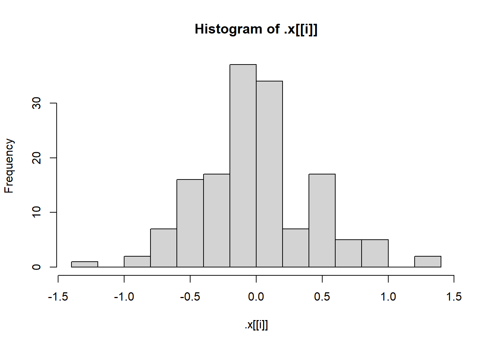

What is the purpose of the lapply() function? What is the equivalent purrr function?
The lapply() function allows us to apply a function to each of the elements in a list. The equivalent purrr function is map().
Suppose we have a list called my_list. Each element of the list is a numeric data frame (all columns are numeric). We want to use lapply() to run the code cor(numeric_matrix, method = “kendall”) on each element of the list. Write code to do this below!
lapply(my_list, cor, method = "kendall")
What are two advantages of using purrr functions instead of the BaseR apply family?
The purrr functions have greater consistency between the functions than the BaseR apply family. It also has some helper functions which allow us to write compact code like list("x", 1) for function(x) x[["x"]][[1]].
What is a side-effect function?
A function that does something, but doesn’t return the modified argument (df). For instance, the print function prints some output but doesn’t return the argument.
Why can you name a variable sd in a function and not cause any issues with the sd function?
The function you create has it’s own temporary environment with local scope that the sd variable belongs to. The sd function belongs to the stats package environment.
Task 2: Writing R Functions
# Load Librarieslibrary(tidyverse)
── Attaching core tidyverse packages ──────────────────────── tidyverse 2.0.0 ──
✔ dplyr 1.1.4 ✔ readr 2.1.5
✔ forcats 1.0.0 ✔ stringr 1.5.1
✔ ggplot2 3.5.2 ✔ tibble 3.2.1
✔ lubridate 1.9.4 ✔ tidyr 1.3.1
✔ purrr 1.0.4
── Conflicts ────────────────────────────────────────── tidyverse_conflicts() ──
✖ dplyr::filter() masks stats::filter()
✖ dplyr::lag() masks stats::lag()
ℹ Use the conflicted package (<http://conflicted.r-lib.org/>) to force all conflicts to become errors
Write a basic function (call it getRMSE()) that takes in a vector of responses and a vector of predictions and outputs the RMSE. If a value is missing for the vector of responses (i.e. an NA is present), allow for additional arguments to the mean() function (elipses) that removes the NA values in the computation.
# RMSE function: sqrt of mean of responses - predictions squared.# Allows for additional arguments to the mean function like na.rm.getRMSE <-function(responses, predictions, ...) {sqrt(mean(((responses - predictions)^2), ...))}
Run the following code to create some response values and predictions.
# Code to generate random responses and predictions.set.seed(10)n <-100x <-runif(n)resp <-3+10* x +rnorm(n)pred <-predict(lm(resp ~ x), data.frame(x))
# Test RMSE function on data.getRMSE(resp, pred)
[1] 0.9581677
Repeat after manually replacing two of the response values with missing values (NA_real_). Test your RMSE function with and without specifying the behavior to deal with missing values.
# Set two response values to missing.resp[13] <-NA_real_resp[50] <-NA_real_# Test the RMSE function without specifying the behavior to deal with missing.getRMSE(resp, pred)
[1] NA
# Test RMSE function while specifying behavior to deal with missing.getRMSE(resp, pred, na.rm =TRUE)
[1] 0.9595025
Write a function called getMAE() that follows the specifications of the getRMSE() function.
# MAE function: mean of absolute error (responses - predictions).# Allows for additional arguments to the mean function like na.rm.getMAE <-function(responses, predictions, ...) {mean(abs(responses - predictions), ...)}
Run the following code to create some response values and predictions
# Randomly generating responses and predictions.set.seed(10)n <-100x <-runif(n)resp <-3+10* x +rnorm(n)pred <-predict(lm(resp ~ x), data.frame(x))
# Test the MAE function using the data.getMAE(resp, pred)
[1] 0.8155776
Repeat after replacing two of the response values with missing values (NA_real_). Test your MAE function with and without specifying behavior to deal with missing values.
# Setting two values to NA.resp[23] <-NA_real_resp[60] <-NA_real_# Testing function without dealing with missing values.getMAE(resp, pred)
[1] NA
# Testing function while dealing with missing values.getMAE(resp, pred, na.rm =TRUE)
[1] 0.8088088
Let’s create a wrapper function that can be used to get either or both metrics returned with a single function call. Do not rewrite your above two functions, call them inside the wrapper function (we would call the getRMSE() and getMAE() functions helper functions). When returning your values, give them appropriate names.
Should also check that two numeric (atomic) vectors have been passed (consider is.vector(), is.atomic(), and is.numeric()). If not, the function should stop and print an informative message.
Return both metrics by default and include names. The behavior should be able to be changed using a character string of metrics to find.
# Wrapper function for getting metrics from responses and predictionsgetMetrics <-function(responses, predictions, metrics =c("RMSE", "MAE"), ...) {# Check conditionsif (is.vector(responses) &&is.vector(predictions)) {if (is.atomic(responses) &&is.atomic(predictions)) {if (is.numeric(responses) &&is.numeric(predictions)) { metrics_list <-list()# If conditions are met check for RMSE metric and get itif ("RMSE"%in% metrics) { metrics_list["RMSE"] <-getRMSE(responses, predictions, ...) }# If conditions are met check for MAE metric and get itif ("MAE"%in% metrics) { metrics_list["MAE"] <-getMAE(responses, predictions, ...) }return(metrics_list) } } }# If any of the conditions are not met then stop the function with messagestop("Arguments must be numeric atomic vectors")}
Run the following code to create some response values and predictions
set.seed(10)n <-100x <-runif(n)resp <-3+10* x +rnorm(n)pred <-predict(lm(resp ~ x), data.frame(x))
# Test the function using this data.# Call for the RMSE metric.getMetrics(resp, pred, metrics = ("RMSE"))
$RMSE
[1] 0.9581677
# Call for the MAE metric.getMetrics(resp, pred, metrics = ("MAE"))
$MAE
[1] 0.8155776
# Call for both metrics.getMetrics(resp, pred)
$RMSE
[1] 0.9581677
$MAE
[1] 0.8155776
Repeat with replacing two of the response values with missing values (NA_real_).
# Setting values to NA.resp[33] <-NA_real_resp[70] <-NA_real_# Try without handling missing values.getMetrics(resp, pred)
$RMSE
[1] NA
$MAE
[1] NA
# Call for RMSE metric with missing values.getMetrics(resp, pred, metrics =c("RMSE"), na.rm =TRUE)
$RMSE
[1] 0.9592779
# Call for MAE metric with missing values.getMetrics(resp, pred, metrics =c("MAE"), na.rm =TRUE)
$MAE
[1] 0.8139449
# Call for both metrics with missing values.getMetrics(resp, pred, metrics =c("RMSE", "MAE"), na.rm =TRUE)
$RMSE
[1] 0.9592779
$MAE
[1] 0.8139449
Test function by passing it incorrect data.
# Make data into a dataframedata <-data.frame(resp, pred)# Call function with incorrect datagetMetrics(data[1], data[2], metrics =c("RMSE", "MAE", na.rm =TRUE))
Error in getMetrics(data[1], data[2], metrics = c("RMSE", "MAE", na.rm = TRUE)): Arguments must be numeric atomic vectors
# Make vectors characterresp <-as.character(resp)pred <-as.character(pred)# Call function with incorrect datagetMetrics(resp, pred, na.rm =TRUE)
Error in getMetrics(resp, pred, na.rm = TRUE): Arguments must be numeric atomic vectors
Task 3: Practice with purrr
# Create a list object to work with.lm_fit1 <-lm(Sepal.Length ~ Sepal.Width + Species, data = iris)
Pull out the coefficients list element using $, coef(), and the pluck() function from purrr.
# Three ways to get the coefficients list element.lm_fit1$coefficients
There is a function called confint() that creates confidence intervals for the coefficients in an lm() fit. We apply that function directly to the fitted object like this:
# Get confidence intervals for one fit.confint(lm_fit1)
Next, let’s create histograms of the residuals in each model fit! Run the code here to set up a 2x2 plotting window.
# Create 2x2 plotting window.par(mfrow =c(2, 2))
Now, pull out the residual vectors (the resid elements of your fits) using map(). Then use the walk() function with hist to create plots.
# Get the resid elements, then use them to create histograms for each fit.fits |>map(pluck(resid)) |>walk(hist)

The names aren’t good, let’s try to fix that! On the list that is created from the map() function used on the resid element, use the purrr::set_names() function to give the names “fit1”, “fit2”, “fit3”, and “fit4” to the elements.
# Make residual histograms for each fit, setting the names for each.fits |>map(pluck(resid)) |>set_names(c("fit1", "fit2", "fit3", "fit4")) |>iwalk(\(Residuals, idx) hist(Residuals, main = idx))